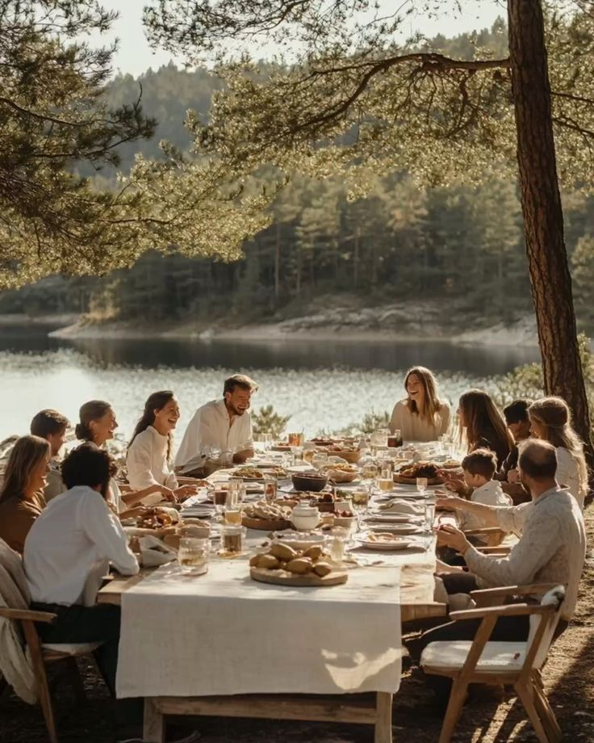

Every year, my family gathers together to share a special holiday meal that everyone helps prepare. We also decorate the house as a team, adding our favorite ornaments and keepsakes that remind us of past celebrations. One of our favorite traditions is telling stories from previous years and laughing about our funniest memories. We always make time to play games after dinner, which brings everyone closer. To end the day, we take a family photo to remember how we’ve grown and changed each year.

Another tradition my family enjoys is baking treats together, filling the house with warm, comforting smells. We take turns choosing a new recipe each year so everyone gets to share something they love. After baking, we sit together and enjoy the treats while watching a favorite holiday movie. We also exchange small handmade gifts that show how much we care for one another. Before the night ends, we share what we’re thankful for, creating a moment of connection and gratitude.
Watching the NFL game on Thanksgiving has become a fun tradition that my family looks forward to every year. We gather in the living room with blankets and snacks, ready to cheer for our favorite teams. The energy in the room grows with every big play, making the day feel even more exciting. Sometimes we make friendly bets or compete in our own mini games during halftime. The shared excitement of the game brings us closer and adds an extra layer of joy to the holiday.
On Thanksgiving, my family gathers together to share a warm and joyful day. Everyone arrives with a favorite dish, filling the house with delicious smells and excitement. We spend time talking, laughing, and catching up on everything we’ve missed throughout the year. After dinner, we relax together, enjoying desserts and sharing stories from past holidays. Being together reminds us how grateful we are for one another and the memories we create.
Before Thanksgiving, my family goes Black Friday shopping just for fun to buy things we like. We look for cool deals on clothes, gadgets, and other items that catch our eye. It’s exciting to explore the stores together and see who can find the best bargains. Sometimes we treat ourselves to little gifts as a way to start the holiday season. Shopping becomes a fun tradition that we all enjoy sharing.